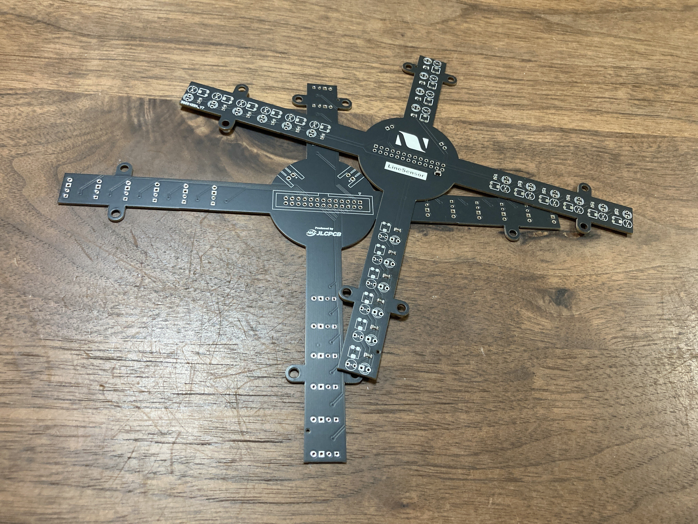
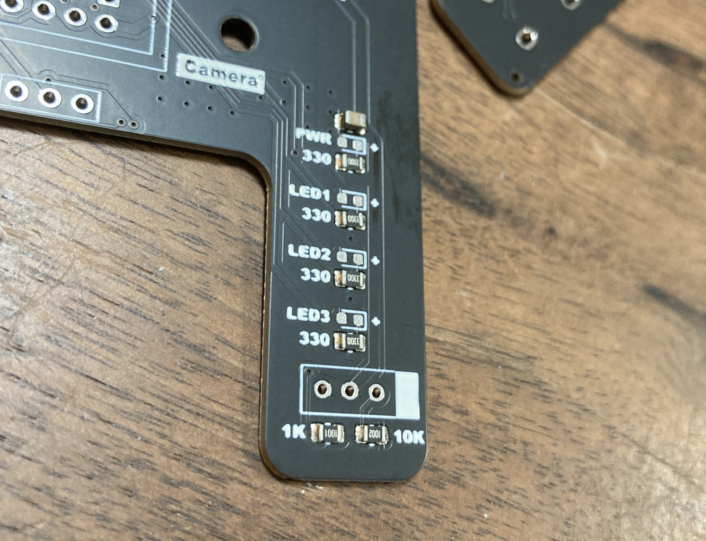
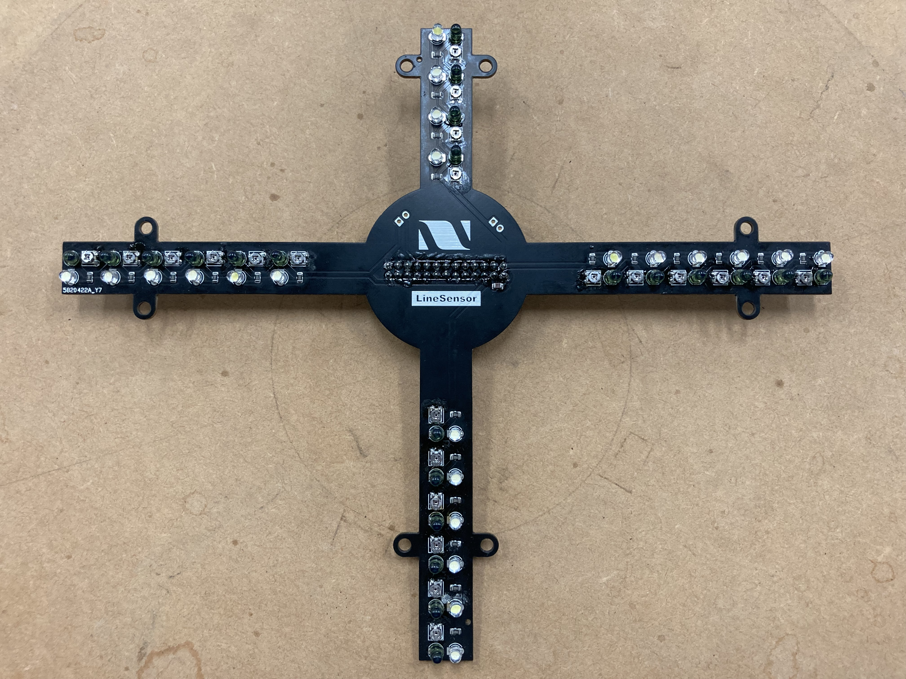

TOINIOT² Blog
おNewのきばん、きた。
今回の記事はJLCPCB様に基板発注をさせてもらったお話。JLCPCB様と言えば基板製作、基板製作と言えばJLCPCB様。
いつものことながらめっちゃいい！ぜひ最後までご覧ください。
2023-09-28 Writer: 010
前回の記事では3Dプリントについてでしたが、今回はJLCPCB様に基板発注をさせていただいたお話です。早速、下の写真をご覧下さい。
1. メイン基板
 2. ラインセンサ基板
2. ラインセンサ基板

今回発注させていただいたのは以上の2つです。
まずはメイン基板。
メイン基板はロボットにおいて最重要機関といっても過言ではありません。
ボール・ラインセンサをはじめ、カメラ、ブザー、スイッチ等のUIなど、関係するものを挙げればきりがありません。なおかつそれをできる限り省スペースで、美しく()仕上げる必要があります。もしもそれらを僕たちが自分でエッチングなどで作ればどうなるでしょう...。間違いなくどこかしらでミスが起き、原因の箇所を突き止める手間はおろか、実験の際にショート！なんていう最悪な自体を招きかねません。その点、JLCPCB様に頼めば、ミスが起きることはほとんどないといえるでしょう。しかもこの高級感ある見た目！この基板の黒をはじめとして、さまざまな基板色を指定できるのもJLCPCB様の魅力の一つです。エッチングだとどうしても色の制約がありますからね...。そしてもうひとつ。

あれれーー？おっかしいぞーー？こんなところにチップコンデンサが～！まだ梱包材とったばっかりなのにー！
そうなんです。（ご存じの方も多いとは思いますが）実は、JLCPCB様では基板製造の後、指定した部品をはんだしてくれるというサービスを行っているんです。価格も自分ではんだするのと同じくらい。このチップコンデンサのように、表面実装を必要とする面倒な部品もこれで万事解決！です。
次にラインセンサ。
はじめに一言。デカっ！去年のものと比べると一目瞭然です。
去年の4方向それぞれ物理的にセンサが独立していたものと比べると、一体型の大きさがより感じられます。

今年のラインセンサは見ての通り、すべてのセンサが一枚の基板でつながっています。これにより、どこかでトラブルがあった際、すべてを取り換える必要がありますが（といっても大きな基板一つを取り換えるだけなので楽ちん♪）、その分、いわゆる”個体差”を軽減することができます。これは結構重要で、ロボットの動きを制御するときに同じ状況でも各ラインセンサが異なる値を出してしまったら、かなり面倒なことになります。一体型にすることにより、そのような個体差を減らし、より同条件下でのセンサ値の取得が可能になるのです。
じゃあなぜ今までしてこなかったの？
答えは簡単、大きすぎるから。これに尽きます。このサイズのものをエッチングするとかなり広い面積のエッチング基板が必要になってきます。しかも基板の形状的に、その大部分が結局無駄になってしまうことに...。失敗すれば（失敗しなくてもそれなりに）費用もかさんできます。やはりJLCPCB様はそんなときの救世主。こんな大きな基盤だって、低コストで見た目も中身も完璧に仕上げてくれます。
ここまで長々と書いてきましたが、言いたいことはただひとつ。JLCPCB様、ありがとうございました。そして、次回もよろしくお願いします！
では今日はこの辺で。
最後まで読んでいただきありがとうございました。また次の記事でお会いしましょう！

↓ JLCPCB様のホームページはこちらから
https://jlcpcb.com/
↓ 今ならクーポンゲットのチャンス！
https://jlcpcb.com/JPV
JLCPCBでは、今回使わせていただいた基板製造以外にも、前回紹介した3Dプリント、CNCフライスを用いた金属加工など、様々なサービスを行っています。
気になる方はHPをチェック！